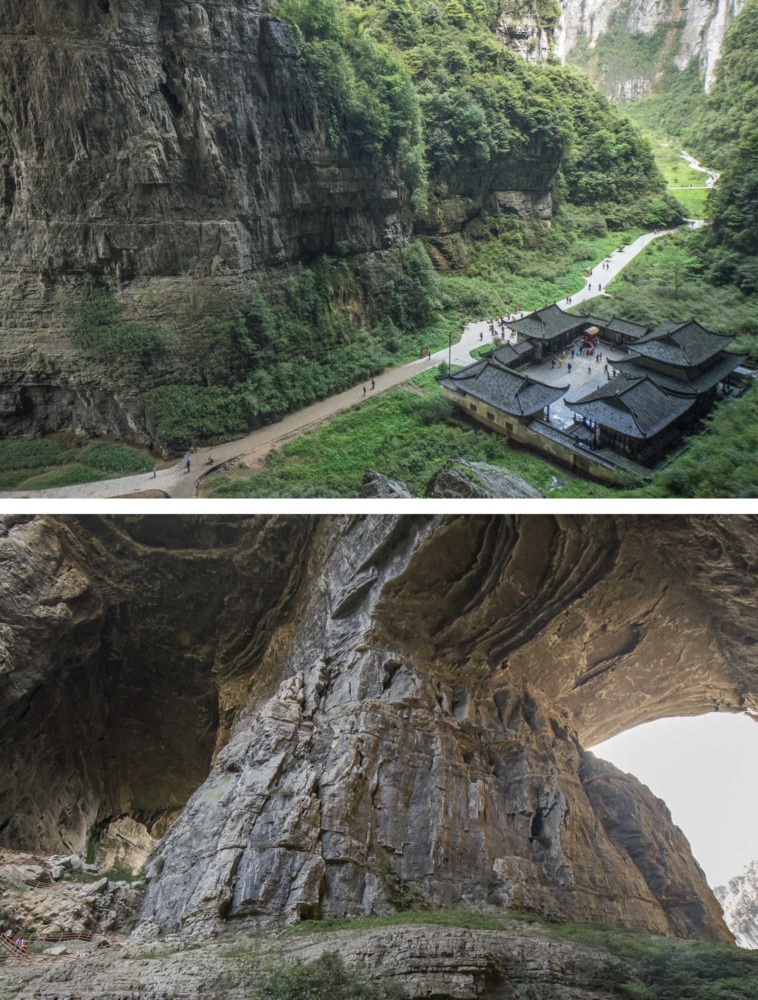
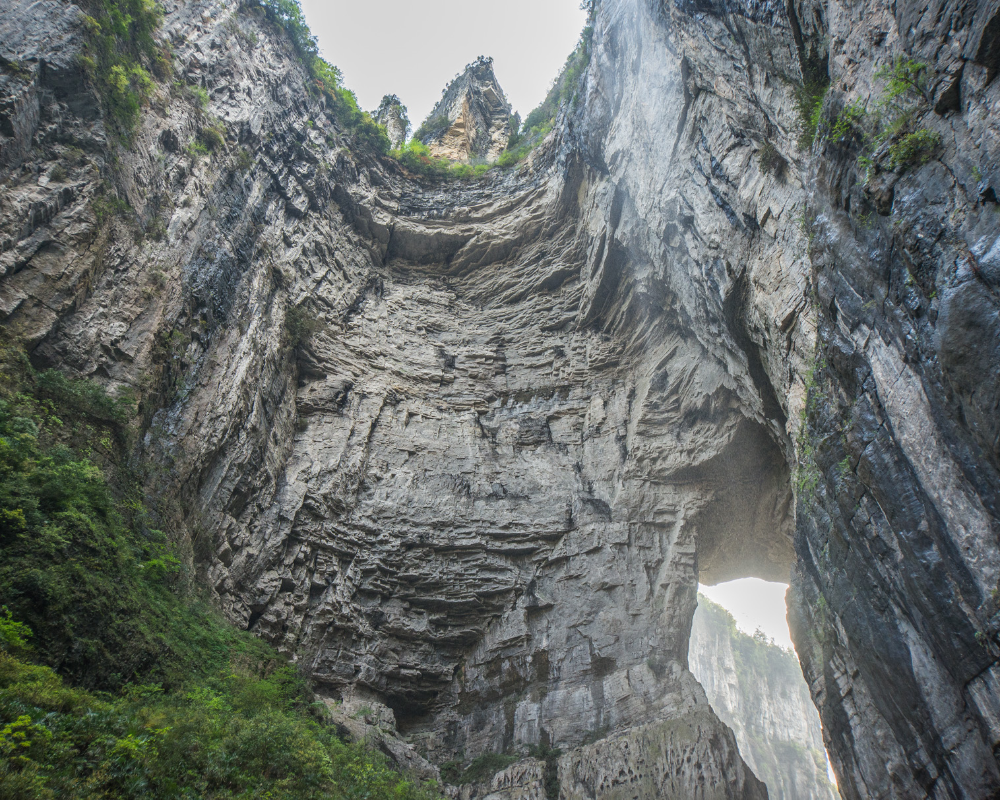

The Karst Bridges of Wulong
Posted on April 14, 2013 in Chongqing, SichuanThe theme for this mini-post is massive rocks. Located in the Wulong National Geology Park, the Wu Long karsts form a range of massive stone bridges and deep mountain valleys in Wulong county of Chongqing municipality. The Wulong karsts, now a UNESCO World Heritage Site, are also home to the Three Natural Bridges (天生三桥)
 To get to the beautiful Wulong karsts, the first step is to navigate through the town of Wulong. Wulong town is essentially a playground for Chongqingers on weekend getaways. The downtown area is inundated with hundreds of new (and already seemingly falling apart) villas and townhouse developments all of highly questionable taste. To say that this once pristine geological wonderland is now commercialized would be an understatement. However, the landscape in this area is undeniably impressive, albeit a bit too accessible by tour buses (While we wish everywhere was only accessible by 3-hour uphill hikes, I’m sure in 20 years, we too, will appreciate paved access to some of these once remote areas).
Once there, the Three Natural Bridges definitely lived up to our managed-yet still-excited expectations. The walk through the park takes about 90 minutes at a leisurely pace. The entire walkway is paved and many of the local women were unsurprisingly rocking 3-inch heels.
Initially, a path will lead to a rather rickety elevator. Once we stepped into the elevator, the first view of Tianlong Bridge appears, which will get your blood running. As the elevator descends into this massive valley, I experienced the great sensation of being small and insignificant under something shaped by thousands of years.
Wulong is a great day trip. It’d probably be an even better weekend trip as we were pushed for time. There are a number of really beautiful places around Wulong that we haven’t explored yet, so we’ll be sure to report back our future findings. Thus far, Wulong is definitely a thumbs up. For you Beijingers, I’d rate Wulong as in the same ballpark, but slightly better than Long Qing Xia (龙庆峡) in terms of awe factor.